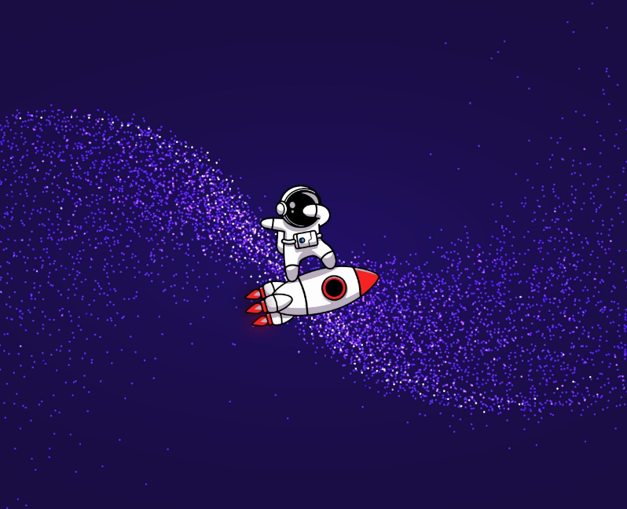

<div class="container" (mouseover)="expandirMenu()" (mouseout)="retrairMenu()">

  <div class="perfil-container">
    
  </div>

  <div class="links">

    @for(link of listaMenu; track link) {
    <div class="content-link flex align-items-center justify-content-center"
      [class]="ativarRota(link.routerLink) ? 'ativa' : ''" (click)="navegar(link.routerLink)">
      <i class="fa-solid" [class]="link.icon" style="width: auto; font-size: 1.3rem; color: white;"></i>
      <!-- <i [class]="link.icon" style="font-size: 1.5rem; width: auto; color: white;"></i> -->
    </div>
    }

  </div>

  <div class="extensao-menu" [class]="menuAberto ? 'menu-aberto' : 'menu-fechado' ">

    <div class="perfil-container"></div>

    <div class="links">

      <div class="content-link" (click)="setRota('/graficos')">
        <h4>DashBoard</h4>
      </div>

      <div class="content-link" (click)="setRota('/clientes')">
        <h4>Clientes</h4>
      </div>

    </div>

  </div>

</div>